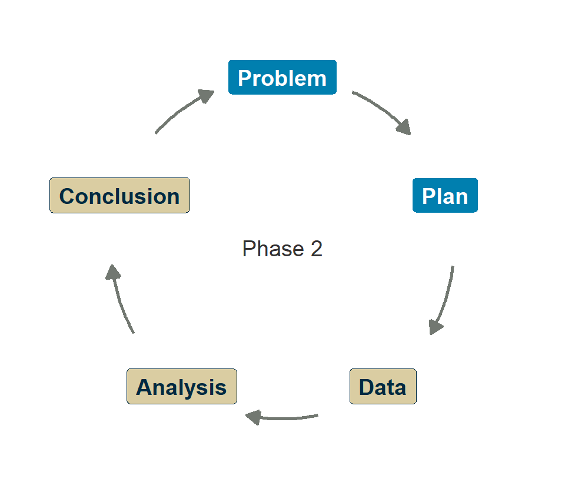
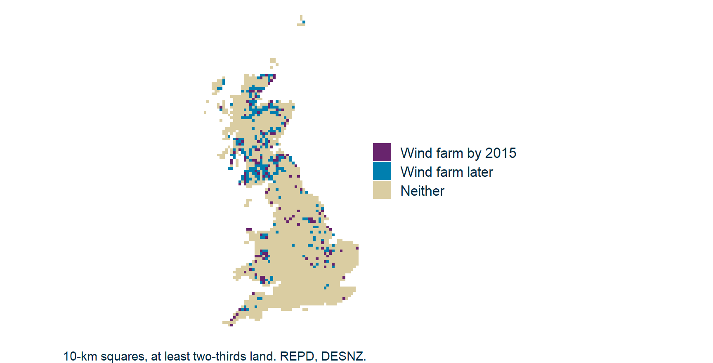
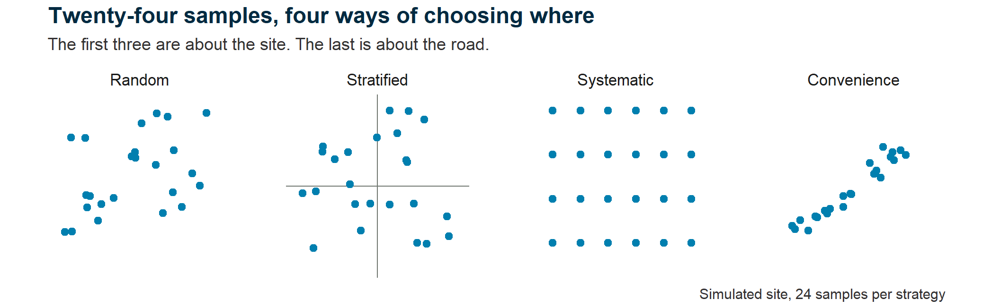
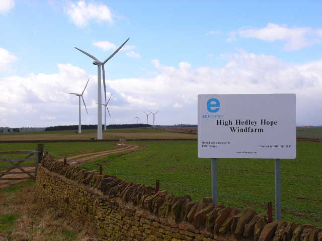

Designing your investigation
Research Skills — Week 5
Today's exercises
Welcome to Phase 2
11:05
Welcome to Phase 2
- What makes a good experiment?
- HolmesCo’s site investigation
- Confounding variables
- Sampling strategies
- Design sketch
- Wrap-up
The second phase
11:05
Phase 1 (done ✓)
Drax report: formative mini-project.
Phase 2 (starts now)
Your own group’s question and dataset.
Summative: 30 % of module grade.
Questions?
11:05

Submit questions:
PollEv.com/geol
text geol to 07480 781235
The assessment
11:08
Individual policy report (1500–2000 words).
- Based on your group’s investigation
- Same structure as Phase 1: summary → evidence → caveats → conclusions
- Due after Week 10
Your commit history shows your individual contribution.
Acting on your feedback
11:10
You said (15 replies)
- Pace: 7 too fast, 6 right, 1 slow
- Less of “the really broad data concepts”.
- “Less time on slides, more time being told how to code”
- … and one “Less coding”
- Clearer distinction between “listening” and “doing”
I’ll change:
- Phase 2 moves from diagnosis to solution
- “Concepts”: Cut to the chase
- Concepts through code, not conversation
- Slides badged, e.g. 🎓 Concept or 💻 Live code
What makes a good experiment?
11:15
- Welcome to Phase 2
What makes a good experiment?
🎓 Concept block 1
- HolmesCo’s site investigation
- Confounding variables
- Sampling strategies
- Design sketch
- Wrap-up
The logic of comparison
11:15
You can’t know if something is big unless you measure something else.

More or Less: “Is that a big number?”
© BBC; screenshot used for instruction
Controls
11:20
What you hold constant so you can isolate the variable of interest.
Example: How does latitude affect wind farm output?
What else differs between wind farms at different latitudes, apart from latitude?
| Control for | Why |
|---|---|
| Turbine model | Different models have different capacities |
| Terrain | Ridgetop/valley/offshore: affects wind speed |
| Grid curtailment | Grid operator tells certain farms to stop generating |
Harder to control: Weather; maintenance schedules; …
Treatment vs control groups
11:25
Lab sciences
Treatment group gets the intervention.
Control group doesn’t.
Random assignment.
Field sciences
“Treatment” is often a natural condition.
“Control” is a comparison group.
You can’t randomize geology.
HolmesCo’s site investigation
11:30
- Welcome to Phase 2
- What makes a good experiment?
HolmesCo’s site investigation
💬✏️ Exercise 1
- Confounding variables
- Sampling strategies
- Design sketch
- Wrap-up
The scenario
11:30
⚒️ HolmesCo
Geological Consultants Since 2019
“Building Confidence in the Ground Beneath You”™
Ground Investigation Report Summary · full report
Esh Spinning is a proposed twelve-turbine wind farm in County Durham.
We drilled 3 boreholes alongside access roads in the Deerness valley. All three encountered competent sandstone.
Laboratory tests on 36 core specimens give a mean strength of 62 MPa (95 % CI 59–65 MPa): a statistically robust sample.
We conclude that bedrock across the site is suitable for turbine foundations.
How far do you trust the conclusion?
Work with the rest of your desk for 5 minutes.
Attendance
11:30
The problems
11:38
- Tiny sample: 3 boreholes for a multi-km² site; 36 specimens don’t change that
- Wrong location: boreholes in the valley, turbines on the ridgetops
- Selection bias: sampled where it was convenient, not representative
- No comparison: how do we know this is unusually good (or bad)?
- Is this the right question? e.g. presence of mine workings?
Confounding variables
11:45
- Welcome to Phase 2
- What makes a good experiment?
- HolmesCo’s site investigation
Confounding variables
🎓 Concept block 2
- Sampling strategies
- Design sketch
- Wrap-up
What is a confounder?
11:45
A variable that is correlated with both the treatment and the outcome.
You can’t tell which caused the effect.
Confounding examples
11:47
Ice cream by the sea: Hatice Baran / Pexels
| Observation | Apparent cause | Real cause (confounder) |
|---|---|---|
| Ice cream sales ↑, drowning ↑ | Ice cream causes drowning? | Hot weather |
| More solar panels → higher GDP | Solar causes wealth? | Latitude, governance, investment |
| Wind farms → fewer bird species | Turbines harm birds? | ??? |
Confounders, contra causation, can cause correlation.
Wind farms and birds
11:50

Wind farm squares have fewer species
11:52
Polished version: w05-birds-raw.R
Turbines harm birds?
A possible confounder: recording effort
11:54
A possible confounder: recording effort
11:57
Allowing for recording effort: Stratification
11:59
Allowing for recording effort: the result
12:01
Polished version: w05-birds-effort.R
Turbines help birds?
Before the turbines
12:03
Polished version: w05-birds-before.R
The “benefit” was there before any turbine. Something else chose those squares.
What would a controlled experiment look like?
12:06
You fund wildlife research. Design the study that would tell you what wind farms do to birds.
Same sites, before and after
12:08
Curlew: Odd Rune Falch / Pexels
Pearce-Higgins et al. (2012) J. Appl. Ecol. 49: 386–394
Design
- 18 upland wind farms, UK
- Breeding birds counted before, during and after construction
- Same counts on nearby reference sites with no turbines
Findings
- Snipe −53 % during construction
- Curlew about −40 %, with no recovery
- No such declines on reference sites
Why the reference sites?
12:10
⚒️ HolmesCo
Geological Consultants Since 2019
“Results Well Above Average”™
Remediation Results
Last summer we treated the five wells with the highest nitrate in the catchment. This summer, all five are lower. Treatment works.
What would those five wells have done without treatment?
Regression to the mean: pick sites because they were extreme, and they look better next time anyway. An extreme reading is partly bad luck, and luck doesn’t repeat.
How to handle confounders
12:13
- Randomization — when possible (rare in geoscience)
- Stratification — compare within subgroups
- Matching — pair similar observations
- Acknowledgement — when all else fails, be honest about what you can’t control
Sampling strategies
12:15
- Welcome to Phase 2
- What makes a good experiment?
- HolmesCo’s site investigation
- Confounding variables
Sampling strategies
🎓 Concept block 3
- Design sketch
- Wrap-up
How to choose your sample
12:15

Shap Granite. Sample a grain: which one? jtweedie1976 / Flickr, CC BY 2.0
| Strategy | How | When |
|---|---|---|
| Random | Every unit has equal probability | Gold standard; often impractical |
| Stratified | Sample within each subgroup | Ensures representation |
| Systematic | Every nth unit | Regular grids, monitoring stations |
| Convenience | Whatever’s easiest | HolmesCo’s default |
The same site, four ways
12:23


High Hedley Hope wind farm, County Durham.
Where on this site would you sample?
Oliver Dixon / Geograph, CC BY-SA 2.0
One sample, or many?
12:32
HolmesCo tested 36 core specimens from 3 boreholes.
Is that n = 36, or n = 3?
A replicate is one independent sample of the thing you are asking about. For “what is the site like?”, that thing is the ground, and specimens from one hole share its ground: n = 3.
Count them as 36 and the confidence interval shrinks for free. That is pseudoreplication.
Your sampling strategy, and your unit of replication, are decisions you must justify in your report.
Design sketch
12:40
- Welcome to Phase 2
- What makes a good experiment?
- HolmesCo’s site investigation
- Confounding variables
- Sampling strategies
Design sketch
✏️💬 Integrative exercise
- Wrap-up
Choose your topic
12:40
Browse the available project topics.
Form provisional groups (3–4 people).
Pick a candidate topic. Then sketch:
- Question — what are you investigating?
- Data — what would you need?
- Comparison — what’s your control?
- Confounders — what should you worry about?
Wrap-up
12:43
- Welcome to Phase 2
- What makes a good experiment?
- HolmesCo’s site investigation
- Confounding variables
- Sampling strategies
- Design sketch
Wrap-up
Key points
12:43
- Good design = clear comparison + controlled confounders
- Extremes drift back: compare with sites that were left alone
- Sampling, and what counts as a replicate, are choices you must justify
- HolmesCo’s mistakes are easy to make — watch for them in your own work
Any questions we missed?
12:43
Submit questions:
PollEv.com/geol
text geol to 07480 781235
Next time
12:47
Application session: “Planning your investigation”
- Finalize groups and topics
- Set up your group GitHub repo
- Write a one-page research plan
Suggested reading
12:47
- Krzywinski & Altman, “Designing comparative experiments”, Nature Methods (2014). Reading list
- Blainey, Krzywinski & Altman, “Replication”, Nature Methods (2014). Reading list
- Krzywinski & Altman, “Power and sample size”, Nature Methods (2013). Reading list